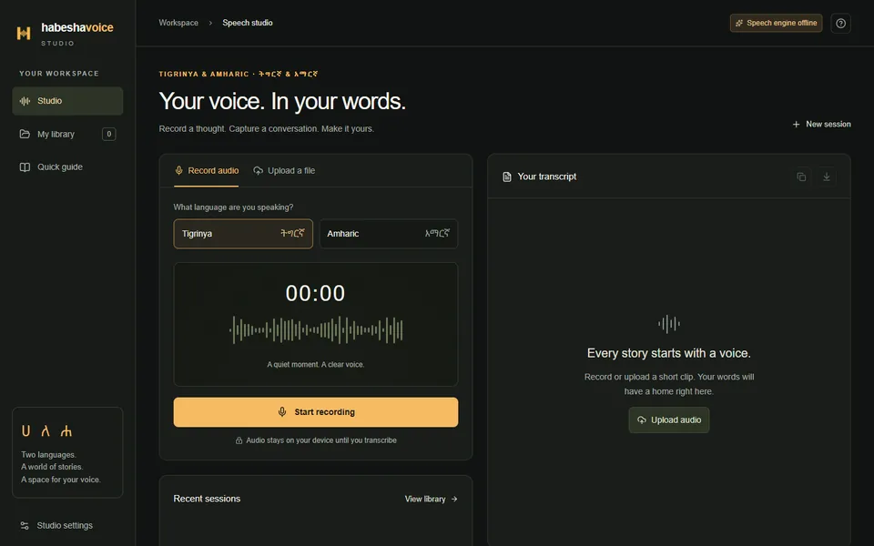

I build backend systems, NLP and speech tooling, and interpretable ML. Full-stack developer at Anzyz Technologies, now studying for a Master's in Cybersecurity.
I'm a full-stack developer at Anzyz Technologies, where I build Python and FastAPI backends for document ingestion, processing and NLP. Before that I built an industrial PLC tool in C# / .NET at Red Rock. I finished my B.Eng. in Computer Engineering at the University of Agder in June 2026 and I'm now studying for a Master's in Cybersecurity.
Outside work I build things for my own community and curiosity: a speech-to-text studio for Tigrinya and Amharic, interpretable-ML research, and an immersive 3D tour of Eritrean church architecture.
0
Professional roles
0
Live products
0
Languages spoken
🇳🇴 Norsk
🇬🇧 English
🇪🇷 Tigrigna
🌍 Arabic
💼
Current role
Full-Stack Developer — Anzyz Technologies
🎓
Education
Master's in Cybersecurity (in progress) · B.Eng. Computer Engineering, UiA (2023–2026)
Develop and maintain full-stack solutions and backend services with Python, FastAPI, MongoDB, Celery and Elasticsearch. Work on document ingestion, processing and analysis, including NLP features that identify and visualise relationships between concepts and themes. Also contribute integrations, testing, debugging, pull requests and production-ready improvements.
PythonFastAPIMongoDBElasticsearchCeleryNLP
Aug 2025 Jun 2026
Software Engineer
Red Rock · Kristiansand, Norway
Contributed to an ADS parameter tool for industrial automation systems, built with C#, .NET 8, Avalonia and ReactiveUI and integrated with Beckhoff TwinCAT over ADS. Worked on symbol-tree navigation, parameter comparison, change highlighting, inline editing and JSON-based workflows.
Gave technical support to students and staff, and installed, configured and maintained computers, software, networks and other IT equipment. Troubleshot hardware, software, account, access and network issues. Completed the apprenticeship, leading to the trade certificate (fagbrev) in ICT service.
Technical supportTroubleshootingNetworks
04 / Projects
What I've Built

2026 · FLAGSHIP · SPEECH AI
HabeshaVoice Studio
A private speech-to-text workspace for Tigrinya and Amharic. Record or upload audio, review the transcript against the recording, edit, and export. The web app runs on a standard host while GPU inference sits in a separate FastAPI service, so its credential never reaches the browser.
An immersive 3D walk from a sunlit courtyard into an Eritrean Orthodox-inspired church, with a guided tour, golden-hour and candlelight lighting, ambient sound and a reduced-motion option. No build step.
Can a Tsetlin Machine predict which bookmaker moves its price next, and explain why in human-readable rules? Time-ordered, leakage-safe splits, a bake-off against seven baselines including XGBoost and LightGBM, and GitHub Actions collecting data on a schedule. Research, not betting advice.
A student marketplace app for buying and selling second-hand items. Every uploaded image passes a serverless moderation pipeline: a Firebase Cloud Function runs Google Cloud Vision, flagged images are deleted, and the seller is notified.
A logistics platform with four roles and a full trip lifecycle: request, price, assign, deliver. Status, price and driver assignment update live over SignalR. ASP.NET Identity, EF Core migrations, Swagger docs and a multi-stage Docker build.
An Android translation keyboard. A native Kotlin input-method service handles typing and shows a live translated preview, while Flutter powers onboarding, settings and privacy screens. Typed text is never stored.
A desktop tool for industrial automation that reads live PLC symbols over Beckhoff TwinCAT ADS. Symbol-tree navigation, parameter comparison, change highlighting and inline editing. Source is private.
C# / .NET 8AvaloniaReactiveUITwinCAT ADS
2026 · INTERPRETABLE ML
Tsetlin Trader
An interpretable trading engine: Tsetlin Machine rule-based signals executed as paper trades through a pluggable broker interface. Every decision ships with the human-readable logic that produced it.
A deliberately vulnerable Flask app plus an attacker server that demonstrates an XSS attack end to end, including credential theft through a fake login page. Containerised with Docker Compose so it runs in isolation.
An authentication system with bcrypt-hashed credentials, brute-force protection through rate limiting and timeouts, TOTP two-factor authentication compatible with authenticator apps, and an OAuth2 authorization-code flow.
A React Native app for teachers to manage students, courses and assessments, with full create, edit and delete flows and a Firebase backend. About 97% TypeScript.